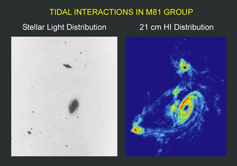
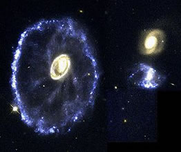
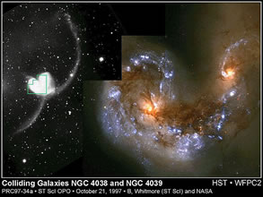
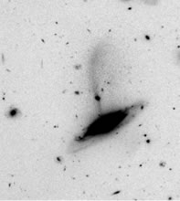
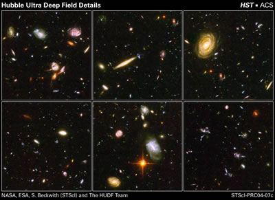

An ‘interacting galaxy’ is one that is in the process of being affected by another galaxy. This is not an uncommon occurrence as galaxies are rarely found in isolation. Most are surrounded by a swarm of satellite galaxies and are themselves embedded in larger aggregates called groups or clusters.
Interactions can disturb, or even radically change, the morphologies of the galaxies involved, often inducing new bursts of star formation. The most common interaction is known as a ‘fly-by’ and involves two or more galaxies (which do not actually come into contact) approaching close enough that the gravitational field of each galaxy influences the gravitational fields of the others. These high speed encounters can create new structures such as warps or bars, or even tidal tails that extend well beyond the main body of the galaxy.
| A spectacular example of a multiple interaction is the Messier 81 group of galaxies. The left-hand panel shows the optical view of M81 (the large dominant galaxy) with neighbouring galaxies NGC 3034 (above) and NGC 3077 (lower left). The right-hand panel shows the HI (radio) image which traces the distribution of cold gas in the system. This reveals long tidal tails of gas, not seen in the optical image, which connect the galaxies – a clear indication that all three galaxies are interacting with each other. |

Optical and radio images of the interacting M81 group. Tidal tails of gas are clearly evident in the radio image.
Credit: Image courtesy of NRAO/AUI |
|

The Cartwheel galaxy has recently suffered an interaction, probably when one of the two galaxies to the right ploughed through its centre.
Credit: Kirk Borne (STScI), and NASA |
Another impressive example of an interacting galaxy is the Cartwheel galaxy. This galaxy was similar to our own Milky Way until quite recently, when a smaller galaxy (probably one of the galaxies on the right) ploughed through its centre. The interaction has created spokes of stars and gas, and a bright blue ring of new star formation. This has resulted in a wheel-like appearance for the galaxy and its descriptive name. |
| Another form of interaction that can radically alter the pre-existing morphology of a galaxy is a merger event. A well-known example of an on-going major merger (i.e. one that involves galaxies with approximately equal masses) is the Antennae. This system exhibits two massive tidal tails thrown off by the gravitational interaction between the galaxies (left panel), and many new star clusters (right panel; bright blue knots) created through the interaction. Astronomers use the Toomre Sequence to visualise and track the progression of morphological changes that take place during major mergers. |

The interacting galaxies NGC4038/39 – the Antennae.
Credit: Brad Whitmore (STScI) and NASA |
|

A satellite galaxy is ‘shredded’ by its parent galaxy.
Credit: Duncan Forbes and Mike Beasley (Swinburne). |
Of course, not all mergers involve galaxies of similar masses, and minor mergers (where one galaxy is substantially more massive than the other) are far more common. This image shows an on-going minor merger observed by Swinburne astronomers Duncan Forbes and Mike Beasley with the ACS instrument on the HST. It appears that the smaller satellite dwarf galaxy is being shredded by the larger galaxy, forming a large tidal tail which connects and extends beyond the two galaxies. Ultimately, the smaller galaxy will be completely disrupted and will merge with the larger galaxy. |
The Milky Way is currently undergoing minor mergers with both the Sagittarius and Canis Major dwarf galaxies. These galaxies are currently in the process of being shredded and absorbed by the Milky Way.

Credit: NASA, ESA, S. Beckwith (STScI) and the HUDF Team.
While it would seem that interactions are common in the local Universe, both models and observations of the distant Universe have shown that they were even more prevalent in the past. For example, six regions from the Hubble Ultra-Deep Field (shown right) contain an extraordinary number of interacting galaxies.
Consequently, over the 13 billion years since the Big Bang it seems highly probable that any individual galaxy will have suffered at least one major interaction with another galaxy, as well as several minor interactions. Interactions are therefore very important in the development of galaxies, though the degree to which galaxy formation and evolution is driven by interactions is still being investigated.